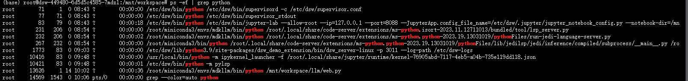

输入：
ps -ef |grep python然后就会出现如下内容：

接着kill掉对应的进程就好了，比如说：
kill -9 13626感觉这样的小tips更适合放进某种更精巧的浏览器窗口，但目前还不知道怎么去弄。但既然都已经写到文章里了，还是稍微充实一下内容吧。
详解一下上述的命令：
ps
ps 代表 "process status"（进程状态）。
默认情况下，ps
显示当前用户（即运行该命令的用户）所属会话的进程。
常见的 ps 命令选项包括：
ps -e 或 ps -A：显示所有进程。
ps -f：显示进程的详细信息，包括进程的父进程、启动时间、占用的资源等。
ps -u username：显示指定用户的进程。
ps -aux：显示所有用户的所有进程，并且是以长格式显示。
ps -ef：以全格式显示所有进程，通常用于显示所有进程的信息，包括进程树（父子关系）。
其他部分：
|：管道符，将 ps -ef 命令的输出传递给 grep 命令。
grep python：在 ps -ef 的输出中筛选出包含 "python"
字符串的行。
grep
grep 命令是 Linux 和类 Unix
系统中用于在文件或标准输入中搜索文本字符串的工具。它通过使用正则表达式（regex）来匹配和显示包含特定模式的行。grep
命令常用于从大量数据中提取信息，特别是在日志文件或输出中查找特定内容。
基本语法
grep [options] pattern [file...][options]：可选的参数，用来控制 grep 命令的行为。
pattern：要匹配的模式（可以是一个普通字符串或正则表达式）。
[file...]：要搜索的文件。如果不指定文件，grep
将从标准输入（通常是键盘输入或其他命令的输出）读取数据。
常见命令选项：
| 选项 | 说明 |
|---|---|
| -i | 忽略大小写，进行不区分大小写的搜索。 |
| -v | 反转匹配，显示不包含指定模式的行。 |
| -r 或 -R | 递归搜索，搜索指定目录及其子目录中的文件。 |
| -l | 仅显示匹配模式的文件名，而不是文件的内容。 |
| -n | 显示匹配行的行号。 |
| -c | 仅显示匹配模式的行数。 |
| -H | 显示匹配行所在的文件名（用于多个文件时）。 |
| -w | 只匹配整个单词（不会匹配单词的一部分）。 |
| -x | 只匹配整个行（即行的内容必须与模式完全匹配）。 |
| -e | 允许指定多个匹配模式。 |
kill
kill
是用来向进程发送信号的命令。通常用于终止（杀死）进程，虽然它的名字是“kill”，但实际上是发送指定的信号给进程，默认信号是
SIGTERM（终止信号）。
常见信号：
|信号|信号编号|作用说明|
| --- | --- | --- |
|SIGTERM |15 |默认信号，要求进程正常退出（优雅退出）。|
|SIGKILL |9 |强制终止进程，无法被捕获或忽略。进程立即退出。|
|SIGHUP |1 |通常用于告知进程重新加载配置文件或重新启动。|
|SIGINT |2 |来自键盘的中断信号，通常对应
Ctrl+C，用于停止前台进程。|
|SIGSTOP |19 |暂停进程，无法被捕获或忽略。|
|SIGCONT |18 |恢复暂停的进程（SIGSTOP 后）。|
|SIGSEGV |11
|常见的段错误信号，通常由进程访问无效内存地址时触发。|
|SIGUSR1 |10 |用户自定义信号1，可以由程序根据需求进行处理。|
|SIGUSR2 |12 |用户自定义信号2，可以由程序根据需求进行处理。|
其他选项：
-l：列出所有信号的名称和对应的数字。
-s 或
--signal：指定要发送的信号，可以使用信号的名字或数字。
-HUP：发送 SIGHUP
信号，通常用于让进程重新加载配置文件或重启。